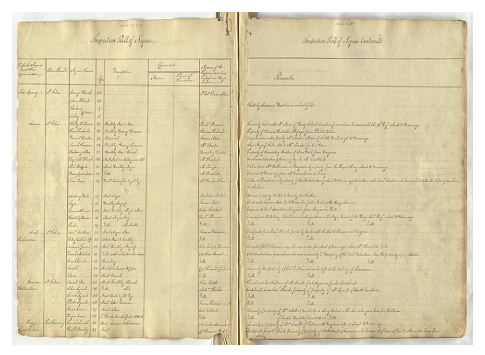
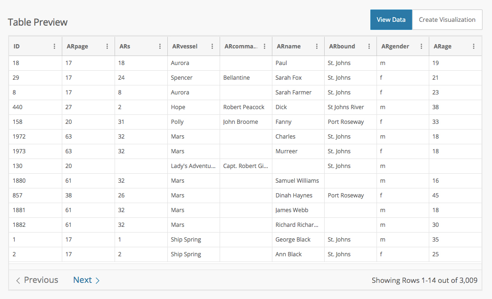
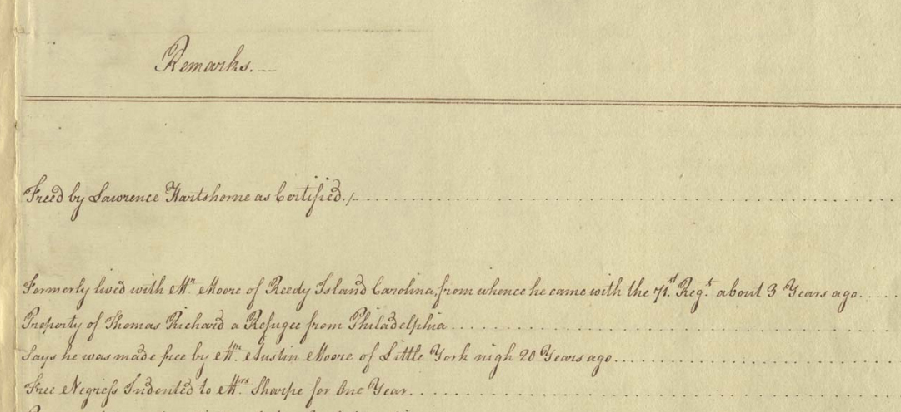

Data information licensed under the
Open Government Licence – Nova Scotia.
"...the single most important document relating to the immigration of African Americans to Nova Scotia following the War of Independence. It provides the names of 3000 black refugees registered on board the vessels in which they sailed from New York to Nova Scotia between 23 April and 30 November 1783."



Brief descriptions of each person from manuscript were not transferred to csv format.
Descriptions ranged from objective to subjective (physical appearance to personal and/or slave history)
Brief descriptions of each person from manuscript were not transferred to csv format.
Descriptions ranged from objective to subjective (physical appearance to personal and/or slave history)
Created with Vega-lite
Created with Adobe Illustrator
(Work in progress)
*select image for full view*